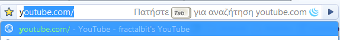
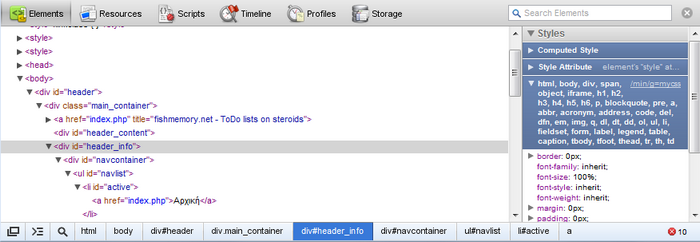
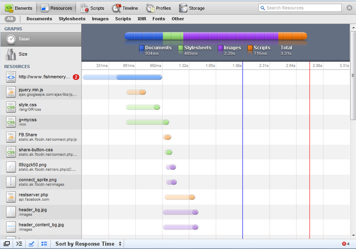

Εδώ και περίπου 2 μηνές χρησιμοποιώ ως κύριο browser τον Chrome. Τον firefox τον έχω πλέον μόνο για να δοκιμάζω τις ιστοσελίδες που φτιάχνω και να μπαίνω σε ebanking sites που δεν υποστηρίζουν chrome. Το άρθρο δεν έχει σκοπό βέβαια να θάψει τον firefox, έναν πλοηγητή που θεωρούσα και ακόμα θεωρώ ίσως τον πιο πλήρη αλλά και εύχρηστο.
Ειδικά όμως αν τον έχεις φορτώσει με πολλά extensions γίνεται λίγο "βαρύς κι ασήκωτος" κι εγώ ήθελα να δοκιμάσω κάτι καινούργιο. Τον chrome τον είχα δοκιμάσει και παλιότερα και με είχε κερδίσει με το απλό και καθαρό interface αλλά και την ταχύτητά του. Δεν έκανα όμως το switch μέχρι τώρα γιατί δεν υποστήριζε extensions, κάτι πολύ βασικό για μένα. Όμως από την έκδοση 4 και μετά που κυκλοφόρησε στις αρχές του έτους τα extensions υποστηρίζονται επίσημα και έχουν ήδη κυκλοφορήσει σχεδόν όλα τα δημοφιλή που έχει ο firefox ή παρόμοια. Ένα πλεονέκτημα που έχει σε σχέση με τον firefox είναι ότι η εγκατάσταση τους δεν απαιτεί επανεκκίνηση του browser.
Επίσης στον chrome δεν θα βρείτε search engine box... γιατί δεν χρειάζεται. Αν απλά γράψετε στην address bar και πατήσετε enter θα εκτελεστεί αναζήτηση στο google. Τί γίνεται όμως με τα custom search engines όπως το youtube, το skroutz ή το ebay? Εδώ ο chrome έχει κάνει κάτι πολύ απλό. Αν έχετε κάνει έστω και μία αναζήτηση σε κάποιο από τα site τότε αυτό έχει αυτόματα προστεθεί στα search engines. Έτσι, ξεκινώντας να γράφετε το όνομα του site και στη συνέχεια πατώντας το "tab" η address bar μετατρέπεται σε μηχανή αναζήτησης του συγκεκριμένου site. Δείτε και τo screenshot για να πάρετε μια ιδέα.

Ένα χαρακτηριστικό του firefox μόνο, μου λείπει στον chrome. Η εκπληκτική location bar που μαθαίνει. Στον firefox αρκούσαν μόλις 2-3 γράμματα από οποιοδήποτε σημείο του url ή του τίτλου του για να εμφανίσει, πρώτη πρώτη συνήθως, ακριβώς τη σελίδα που θέλατε. Αντίθετα στον chrome οι προτάσεις που βγάζει είναι αποτελεσματικές μόνο όταν ξεκινάμε την πληκτρολόγηση με την αρχή του url. Επίσης μπορεί το "καθαρό" interface του chrome να είναι καλό αλλά στην address bar προτιμώ την υλοποίηση του firefox που εμφανίζεται και το url και ο τίτλος αλλά και το favicon της σελίδας που βοηθάει πάρα πολύ στο να εντοπίσουμε πολύ γρήγορα αυτά που θέλουμε.

Εδώ ο chrome χάνει κατά κράτος και είναι το μόνο πράγμα που με εκνευρίζει σε αυτόν. Ο firefox έχει "μάθει" ότι ακούω ΕΡΑΣΠΟΡ και μου το βγάζει πρώτη επιλογή με ένα μόνο γράμμα! Αντίθετα ο chrome το βγάζει πάντα σαν 6η επιλογή κι ας έχω πάει "άπειρες" φορές κι ας έχω γράψει ολόκληρο το "erasport"!
Όμως πέρα από αυτό έχει και μία σειρά από πράγματα που μου αρέσουν, όπως...
-
Το λιτό αλλά αποτελεσματικό user interface
-
Η ΤΑΧΥΤΗΤΑ!!!
-
Το ό,τι έχει «κλέψει» πολλά χρήσιμα χαρακτηριστικά από άλλους browser και έχει προσθέσει και μερικά δικά του. (Π.χ. Opera: paste & go / firefox: ctrl+shift+T=undo close tab, inline search / νέο: Απουσία status bar που εμφανίζεται μόνο όταν χρειάζεται)
-
Η σελίδα που εμφανίζεται όταν ανοίγεις νέο tab (Έχει 9 thumbs με τα sites που επισκέπτεσαι πιο συχνά, λίστα με πρόσφατα κλεισμένα tabs κ.τ.λ.)
-
Τα εξαιρετικά developer tools
Για να κάνω όμως το switch θα έπρεπε να βρω και όλα τα extensions ή αντίστοιχά τους για τον chrome. Παρακάτω θα βρείτε δύο λίστες με πολύ χρήσιμα extensions μαζί με κάποια σχόλια όπου χρειάζεται. Η πρώτη είναι web-developer oriented και η δεύτερη γενικού ενδιαφέροντος. Όπου γνωρίζω θα γράφω σε παρένθεση και το αντίστοιχο extension του firefox.
Για web developers
(Firefox: firebug) Πολύ απλά στον chrome δεν χρειάζεται καθώς έχει ενσωματωμένα εξαιρετικά developer tools, όπως javascript console για debugging, elements - όπου μπορούμε να δούμε πληροφορίες για οποιοδήποτε tag της σελίδας μας, resources για να βλέπουμε και να βελτιστοποιούμε πόσο γρήγορα φορτώνει το site μας κ.τ.λ.


(Firefox: Web Developer Toolbar) Η αλήθεια είναι ότι δεν υπάρχει (ακόμα) κάτι τόσο ολοκληρωμένο για chrome. Όμως τα ενσωματωμένα developer tools σε συνδυασμό με μερικά extensions (π.χ. pendule, resolution test) αναπληρώνουν σε μεγάλο βαθμό αυτό το κενό
Seo Starus (Πάρα πολύ χρήσιμο για να βλέπετε άμεσα το pagerank και το alexa rank του site που επισκέπτεστε)
Chrome Sniffer (Αν είχατε την απορία για το ποιό λογισμικό ή javascript library χρησιμοποιεί το ΧΨΖ site, το extension αυτό δίνει τη λύση)
Webpage Screenshot (Δημιουργεί screenshots ολόκληρων ιστοσελίδων ακόμα και αν χρειάζονται scrolling)
Measure it Για να πάρετε στα γρήγορα μια ιδέα για το μέγεθος ενός αντικειμένου σε μία σελίδα
Eye dropper (Όχι τόσο καλό όσο το ColorZilla του firefox αλλά χρήσιμο για να πάρετε το χρώμα που θέλετε από μία ιστοσελίδα)
Για όλους τους χρήστες
Easy Youtube Video Downloader (Must have! Κατεβάστε βίντεο από το youtube ή απευθείας σε mp3!)
Google Quick Scroll (Σας έχει τύχει να ψάχνετε κάτι στο google, να πηγαίνετε σε ένα αποτέλεσμα και να χάνεστε σε μία τεράστια σελίδα χωρίς να μπορείτε να εντοπίσετε το επίμαχο κείμενο; Αυτό το extension θα σας λύσει τα χέρια)
Google Mail Checker Plus (Απλά εξαιρετικό, must have αν χρησιμοποιείτε gmail)
Mini Translate (Εύχρηστο πολυγλωσσικό λεξικό με ένα κλικ, πάρα πολύ χρήσιμο)
LastPass (One password to rule them all. Πολύ χρήσιμο για όσους αλλάζουν σχετικά συχνά browser)
Currency converter και Chrome Currency Converter (για όσους αγοράζουν από το εξωτερικό ή πάνε ταξίδια κ.τ.λ.)
Status-bar Calculator (πάντα είναι χρήσιμο ένα κομπιουτεράκι να υπάρχει πρόχειρο)
Forecastfox Weather (ένα weather widget είναι πάντα απαραίτητο, αν και ποτέ δεν το κοιτάω!)
Πολύ θα ήθελα να μας πείτε τη γνώμη σας για τον chrome αλλά και να προτείνετε νέα extensions ή καλύτερα από αυτά που ήδη αναφέρω παραπάνω...